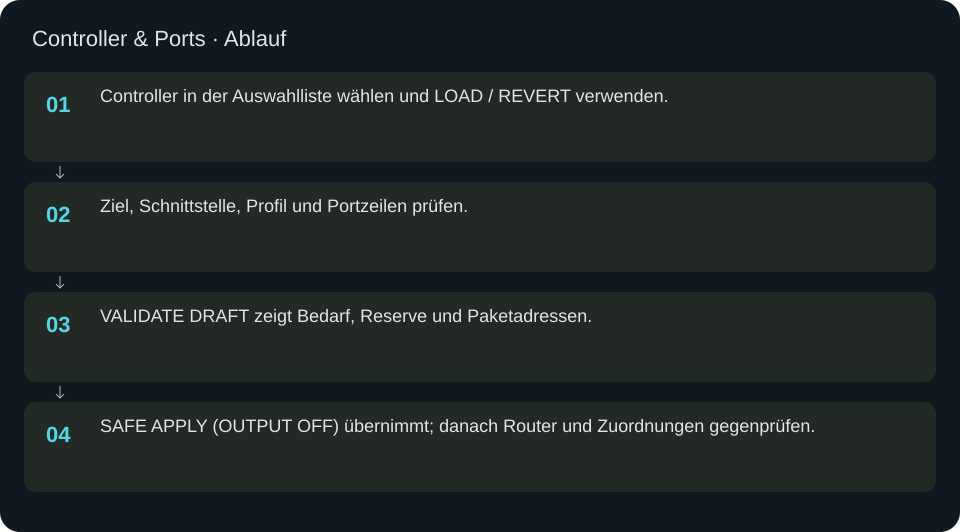
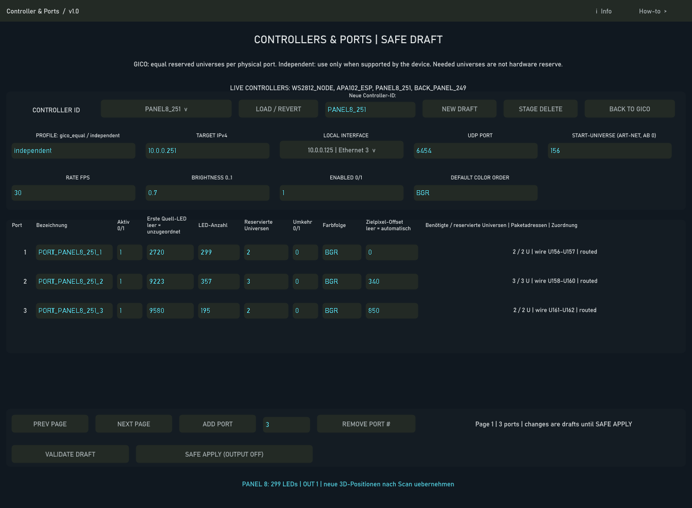

Controller & Ports
Gespeicherte Controller auswählen und ihre Portstruktur als geprüften Entwurf bearbeiten.
In welcher Reihenfolge?
- Controller in der Auswahlliste wählen und LOAD / REVERT verwenden.
- Ziel, Schnittstelle, Profil und Portzeilen prüfen.
- VALIDATE DRAFT zeigt Bedarf, Reserve und Paketadressen.
- SAFE APPLY (OUTPUT OFF) übernimmt; danach Router und Zuordnungen gegenprüfen.


Schritt für Schritt
Entwurf und Livezustand
Die Liste wird aus den konfigurierten Controlleridentitäten erzeugt. LOAD / REVERT verwirft den aktuellen Entwurf und lädt dessen aktuellen Zustand. NEW DRAFT ist für einen wirklich neuen Controller. ADD PORT und REMOVE PORT ändern zunächst den Entwurf. STAGE DELETE bereitet eine Löschung vor; nicht für einen gewöhnlichen Wechsel verwenden.
Beispiel
PANEL8_251 laden. OUT 1 soll 299 LED-Plätze und mindestens zwei RGB-Universen besitzen. Quelle und Zieloffset müssen zur bestehenden Installation passen; sie dürfen nicht aus diesem Beispiel übernommen werden. VALIDATE DRAFT kontrolliert Kapazität und Überlappungen. SAFE APPLY hält die Ausgabe ausgeschaltet.
Portzeilen
Benötigte Universen ergeben sich aus LED-Anzahl und Zieloffset. Reservierte Universen sind Hardwarekapazität. Quelle leer bedeutet unzugeordnet. Auf Folgeseiten weitere Ports prüfen. GICO behält vier feste Hardwareplätze; unbenutzte Ports deaktivieren, statt die Hardwarestruktur umzunummerieren.
Eingaben & Beispiele
| Feld | Bedeutung | Beispiel |
|---|---|---|
load_id | Vorhandenen Controller aus der Auswahl laden; neue ID nur für NEW DRAFT. | PANEL8_251 |
target | Ziel-IPv4 des Controllers. | 10.0.0.251 |
interface | Lokale IPv4 aus Schnittstellenauswahl. | 10.0.0.125 |
udp_port | UDP-Zielport für Art-Net. | 6454 |
first_ui | Art-Net-Startuniversum ab 0. | 156 |
brightness | Helligkeitsfaktor 0–1. | 0.02 |
rate | Angeforderte Rate FPS. | 30 |
enabled | Controllerfreigabe 0/1; sichere Übernahme startet nicht. | 0 |
order | Standard-Netzwerkfarbfolge. | RGB |
profile | gico_equal für gleiche feste Portblöcke; independent nur bei geeigneter Hardware. | independent |
remove_number | Physische Portnummer, deren Entfernung als Entwurf vorbereitet wird. | 3 |
row0_label | Lesbarer Portname. | Panel 8 |
row0_enabled | Portfreigabe 0/1. | 1 |
row0_source | Erste globale Quell-LED; leer = unzugeordnet. | 0 |
row0_pixels | Adressierbare LED-Plätze. | 299 |
row0_reserve | Reservierte Universen; mindestens benötigter Bedarf. | 2 |
row0_reverse | Reihenfolge umkehren: 0/1. | 0 |
row0_order | Netzwerk-Farbfolge. | RGB |
row0_target | Zielpixel-Offset; leer = automatisch nach Portstruktur. | 0 |
row1_label | Lesbarer Portname. | Panel 8 |
row1_enabled | Portfreigabe 0/1. | 1 |
row1_source | Erste globale Quell-LED; leer = unzugeordnet. | 0 |
row1_pixels | Adressierbare LED-Plätze. | 299 |
row1_reserve | Reservierte Universen; mindestens benötigter Bedarf. | 2 |
row1_reverse | Reihenfolge umkehren: 0/1. | 0 |
row1_order | Netzwerk-Farbfolge. | RGB |
row1_target | Zielpixel-Offset; leer = automatisch nach Portstruktur. | 0 |
row2_label | Lesbarer Portname. | Panel 8 |
row2_enabled | Portfreigabe 0/1. | 1 |
row2_source | Erste globale Quell-LED; leer = unzugeordnet. | 0 |
row2_pixels | Adressierbare LED-Plätze. | 299 |
row2_reserve | Reservierte Universen; mindestens benötigter Bedarf. | 2 |
row2_reverse | Reihenfolge umkehren: 0/1. | 0 |
row2_order | Netzwerk-Farbfolge. | RGB |
row2_target | Zielpixel-Offset; leer = automatisch nach Portstruktur. | 0 |
row3_label | Lesbarer Portname. | Panel 8 |
row3_enabled | Portfreigabe 0/1. | 1 |
row3_source | Erste globale Quell-LED; leer = unzugeordnet. | 0 |
row3_pixels | Adressierbare LED-Plätze. | 299 |
row3_reserve | Reservierte Universen; mindestens benötigter Bedarf. | 2 |
row3_reverse | Reihenfolge umkehren: 0/1. | 0 |
row3_order | Netzwerk-Farbfolge. | RGB |
row3_target | Zielpixel-Offset; leer = automatisch nach Portstruktur. | 0 |
row4_label | Lesbarer Portname. | Panel 8 |
row4_enabled | Portfreigabe 0/1. | 1 |
row4_source | Erste globale Quell-LED; leer = unzugeordnet. | 0 |
row4_pixels | Adressierbare LED-Plätze. | 299 |
row4_reserve | Reservierte Universen; mindestens benötigter Bedarf. | 2 |
row4_reverse | Reihenfolge umkehren: 0/1. | 0 |
row4_order | Netzwerk-Farbfolge. | RGB |
row4_target | Zielpixel-Offset; leer = automatisch nach Portstruktur. | 0 |
row5_label | Lesbarer Portname. | Panel 8 |
row5_enabled | Portfreigabe 0/1. | 1 |
row5_source | Erste globale Quell-LED; leer = unzugeordnet. | 0 |
row5_pixels | Adressierbare LED-Plätze. | 299 |
row5_reserve | Reservierte Universen; mindestens benötigter Bedarf. | 2 |
row5_reverse | Reihenfolge umkehren: 0/1. | 0 |
row5_order | Netzwerk-Farbfolge. | RGB |
row5_target | Zielpixel-Offset; leer = automatisch nach Portstruktur. | 0 |
Numerische Eingaben verwenden einen Punkt als Dezimaltrennzeichen. IPs, Pfade, Quellstarts und Universen zuerst mit der tatsächlichen Installation vergleichen.
Woran erkenne ich Erfolg?
Die erwartete Ansicht öffnet, Status und Vorschau entsprechen der gewählten Aktion, und es erscheint kein Fehler. Änderungen beim nächsten Laden beziehungsweise im Live-Status erneut lesen. Ein erfolgreicher Bildschirmtest beweist weder physische LED-Ausgabe noch korrekte Kameramessung.
Quellennachweis
Dateipfade im Projekt-Repository; die Onlinehilfe gibt keinen allgemeinen Dateisystemzugriff frei.
pixelblaze_mapper/build_port_topology_ui.py
Dialog: /project1/multi_controller_output/gico_port_config/controller_ports/ui_panel